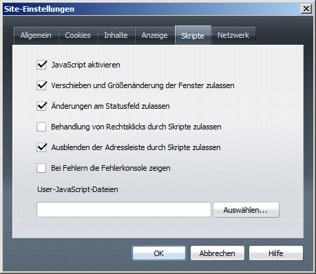

JavaScript wurde lange als gefährlich und unsicher angesehen, sodass viele Webautoren auf JavaScript verzichteten und viele Websurfer die Ausführung von JavaScripten deaktivierten. Dieser Panikmache sollen hier neutrale Informationen gegenübergestellt werden, ohne zu behaupten, JavaScript sei per se sicher und harmlos.
Die besagten Ängste hatten verschiedene Gründe. JavaScript wird seit seinem Bestehen auch zur Gängelung und Irreführung der Websurfer eingesetzt. Moderne Browser haben deshalb Gegenmaßnahmen ergriffen, die die Möglichkeiten von JavaScripten in verschiedenen Punkten beschneiden. Diese Einschränkungen werden wir auf dieser Seite kennenlernen.
Der Einflussbereich der breit akzeptierten Kerntechniken (ECMAScript, das Browser Object Model sowie das Document Objekt Model) ist relativ scharf umrissen. Ein JavaScript, das nur diese Techniken verwendet, hat begrenzte Möglichkeiten und damit ein vergleichsweise geringes Gefahrenpotenzial. Vorausgesetzt ist, dass die Browser grundlegenden Sicherheitskonzepte beachten - auch diese werde im Folgenden vorgestellt.
Wenn Sicherheitslücken in Browsern entdeckt werden, ist in den meisten Fällen JavaScript im Spiel. Ein Teil dieser Lücken ermöglicht ein Umgehen der grundlegenden Sicherheitsbeschränkungen, ein anderer betrifft JavaScript-Erweiterungen. Denn JavaScript ist mittlerweile ein Türöffner für vielfältige clientseitigen Programmierung, die weit über die besagte Kerntechniken hinausreicht.
Die Browserhersteller sind bemüht, die Fähigkeiten von JavaScript zu erweitern, u.a. indem sie Schnittstellen zu bestehenden Techniken einbauen. Zum Beispiel im Internet Explorer hat JavaScript (JScript) Zugriff auf ActiveX-Objekte und den sogenannten Windows Scripting Host. Darüber sind - zumindest prinzipiell - sicherheitskritische Zugriffe auf den Client-Rechner möglich. Nun sind diese Schnittstellen nicht für jedes Script verfügbar, sondern durch Sicherungsmechanismen geschützt. Weil diese jedoch in der Vergangenheit zu freizügig waren oder nicht hinreichend funktionierten, entstanden unzählige Sicherheitslücken.
Auch wenn der Internet Explorer solche Probleme mittlerweile im Griff hat: Das Beispiel soll ein allgemeines Problem verdeutlichen, das fast alle Browser betrifft, und das bisher zu allen Zeiten. JavaScript ist im Hinblick auf Sicherheit nicht unproblematisch und es ist verständlich, wenn Anwender JavaScript deaktivieren oder dessen Möglichkeiten einschränken.
Ein JavaScript verfügt im Vergleich zu anderen Computerprogrammen nur über begrenzte Möglichkeiten. Es operiert im Rahmen eines Browserfenster und eines Dokumentes. Innerhalb dieses strengen Rahmens, in den das Script eingesperrt ist, darf es recht frei schalten und walten, denn es kann nur begrenzten Schaden anrichten. Diese grundlegende Beschränkung nennt sich Sandbox- oder Sandkastenprinzip.
Insbesondere kann ein gewöhnliches JavaScript auf einer Webseite kann keine Dateien auf dem Client-Rechner auslesen, geschweige denn Änderungen daran vornehmen. Es kann auch keine Betriebssystem- oder Browsereinstellungen ändern oder Software auf dem Client-Rechner installieren.
Es gibt nur einige wenige Ausnahmen, in denen ein JavaScript über Browserfenster und Dokument hinaus operieren kann. Zum Beispiel kann es einige bestimmte Browserfunktionen aufrufen und einfache Dialogfenster sowie weitere Browserfenster öffnen. Diese Ausnahmen, die meist mit gewissen Einschränkungen verbunden sind, werden wir noch kennenlernen.
Die Same-Origin-Policy (zu deutsch etwa: Grundregel des selben Ursprungs) besagt, dass ein JavaScript eines Dokuments nur auf diejenigen anderen, fremden Dokumente zugreifen darf, die dieselbe Herkunft haben. Mit derselben Herkunft ist kurz gesagt die Domain in der URI des Dokuments gemeint.
Ein JavaScript hat zunächst einmal Zugriff auf das Dokument, an das es gebunden ist und in dessen Kontext es ausgeführt wird. Bei der Verwendung von Frames, Inner Frames und Popup-Fenstern kann ein Script auch auf andere Dokumente zugreifen. Die Same-Origin-Policy schränkt diese dokumentübergreifenden Zugriffe ein.
Nehmen wir an, in einem Frame wird die URI http://www.example.org/dokument1.html geladen und in einem anderen Frame desselben Framesets die URI http://www.example.org/dokument2.html. Diese beiden Dokumente haben denselben Ursprungsdomain, nämlich www.example.org. Daher können Scripte beider Dokumente gegenseitig auf das jeweils andere Dokument zugreifen, um z.B. Formulardaten oder Cookies auszulesen, über das DOM Änderungen vorzunehmen oder Anwender-Ereignisse zu überwachen.
Wenn die URI des zweiten Dokuments hingegen http://www.example.net/dokument2.html lautet, dann sperrt die Same-Origin-Policy den dokumentübergreifenden Zugriff. Denn der Ursprung ist unterschiedlich, einmal www.example.org und einmal www.example.net.
Ziel der Same-Origin-Policy ist, dass eine Webseite die Daten einer anderen nicht so einfach abgreifen kann. Dies wäre natürlich kein Problem, wenn die andere Webseite sowieso öffentlich ist. Es wäre hingegen ein schwerwiegendes Sicherheitsrisiko bei all denjenigen Webseiten, die einer Anmeldung bedürfen und vertrauliche Daten anzeigen - zum Beispiel Webmail-Dienste, Communities und sämtliche personalisierbaren Webanwendungen.
Die Same-Origin-Policy greift auch bei XMLHttpRequest, besser unter dem Namen Ajax bekannt. Mit XMLHttpRequest kann ein Script HTTP-Anfragen auslösen und somit Daten vom Webserver empfangen oder an ihn übertragen. Die Same-Origin-Policy sorgt dafür, dass mit XMLHttpRequest nur HTTP-Anfragen an dieselbe Domain gesendet werden können.
An einem Punkt greift die Same-Origin-Policy nicht: Ein HTML-Dokument kann mittels script-Element JavaScripte von fremden Domains einbinden. Diese werden mit denselben Rechten ausgeführt wie JavaScripte von derselben Domain. Beispielsweise kann http://www.example.org/dokument1.html das externe Script mit der URI http://www.example.net/script.js einbinden. Diesen Einbinden von Scripten von fremden Webservern Gang und Gäbe vor allem zum Einbinden von Online-Werbung und Statistik-Scripten. Aus der Perspektive der Sicherheit ist eine äußerst zweischneidige Praxis: Einerseits ist es ein sehr nützliches Feature, denn es macht z.B. die Nutzung von Webdiensten möglich. Andererseits kann es zu schwerwiegenden Sicherheitslücken führen, fremden Code in die eigene Seite einzubinden – wir werden später beim Cross-Site-Scripting darauf zurückkommen.
Die Same-Origin-Policy blockt nicht nur den Zugriff, der sogenannte Second-Level-Domains übergreift (z.B. example.org darf nicht auf example.net zugreifen). Die Sperre blockt auch den Zugriff zwischen Subdomains derselben Domains. Das heißt, ein Script in einem Dokument unter de.example.org hat keinen Zugriff auf ein Dokument unter en.example.org, obwohl die Domain dieselbe ist (example.org) und sich bloß die Subdomain unterscheidet (de gegenüber en).
Diese Regelung mag zunächst rigide und streng scheinen, ist aber eine wichtige Sicherheitsbarriere. Diese Sperre geht davon aus, dass unter einer Domain verschiede Websites liegen können, die ihre Daten nicht miteinander teilen wollen. Selbst wenn beide Domains zu einer Site gehören, lassen sich die verschiedenen Domains auf diese Weise kapseln und absichern.
Es gibt jedoch die Möglichkeit, dass ein Dokument einwilligt, dass es für den Zugriff von derselben Domain offen ist.
In einem Dokument unter de.example.org wird folgende JavaScript-Anweisung notiert:
document.domain = "example.org";
Damit ist das Dokument für Scripte zugänglich, die auf einer Domain liegen, die auf example.org endet. Also nicht nur für de.example.org, sondern auch für en.example.org oder hildegard.de.example.org.
Dieses Schema gilt nicht nur für Second-Level-Domains, sondern für beliebige Subdomains. Ein Script unter hildegard.de.example.org kann folgende Anweisung notieren:
document.domain = "de.example.org";
Damit erlaubt es den Zugriff z.B. von mechthild.de.example.org und allen anderen Domains, die auf de.example.org enden.
Die Same-Origin-Policy lässt einen Punkt außer Acht: Ein Script darf im Kontext der Herkunftsdomain ohne Begrenzung schalten und walten sowie mittels XMLHttpRequest Daten empfangen und versenden. Das kann zu einem schwerwiegenden Problem werden, wenn das Script nicht im Web, sondern lokal ausgeführt wird. Lokal bedeutet, dass das Dokument auf einer Festplatte des Client-Rechners liegt und von dort aus im Browser geöffnet wird. Die URI beginnt dann mit file://localhost/, in der Kurzschreibweise file:///.
Die Konsequenz ist, dass ein solches Script prinzipiell alle Dateien auf den erreichbaren Datenträgern auslesen kann (aber nicht ändern - zumindest nicht über XMLHttpRequest alleine). Mit einigen Kniffen können diese abgegriffenen Daten ins Web gesendet werden. Somit ließen sich vertrauliche Daten ausspionieren. Es stellt daher ein grundlegendes Problem dar, wenn fremde Dokumente mit JavaScript auf den eigenen Rechner gelangen.
Der Internet Explorer ab Windows XP mit dem Service Pack 2 stellt daher alle lokalen Dokumente mit Scripten unter Generalverdacht und verhindert ihre Ausführung. Dieser Sicherheitsmechanismus nennt sich Local Machine Zone Lockdown, zu deutsch Sperrung der Zone des lokalen Computers.
Wie sich dieser Generalverdacht auswirkt und wie man den Internet Explorer trotzdem dazu bringen kann, Scripte in lokalen Dokumenten auszuführen, erörtert der Artikel Umgehung der Sperrung der lokalen Zone.
JavaScript hat zwar keine vollständige Kontrolle über den Client-Rechner und den Browser, besitzt aber einige Möglichkeiten des Missbrauchs, mit denen der Benutzers irregeführt, belästigt und gegängelt werden kann. Mittlerweile besitzen die Browser eingebaute Schutzmechanismen, die gewisse Freiheiten von JavaScripten beschränken. Sie sollten diese kennen, denn sie werden bei der JavaScript-Entwicklung früher oder später an diese Grenzen stoßen.
Ein problematisches Thema ist das Öffnen von neuen Fenster mit window.open. Diese Methode wird unter anderem dazu missbraucht, um sogenannte Popup-Fenster (kurz: Popups) mit Werbung zu öffnen, die automatisch und ohne ausdrücklichen Wunsch des Websurfers aufspringen. Das unkontrollierte Öffnen von Fenstern belästigt den Surfer nicht nur, sondern ist auch ein Sicherheitsproblem, denn es kann den Browser lahmlegen oder sogar zum Abstürzen bringen.
Aus diesem Grund haben mittlerweile alle Browser einen sogenannten Popup-Blocker eingebaut. Ältere Browser lassen sich mit entsprechenden Zusätzen nachrüsten. Diese Blocker erlauben das Öffnen von Fenstern mittels JavaScript nur, wenn damit auf eine Benutzereingabe reagiert wird. Wenn sie also einfach window.open aufrufen, werden die meisten Popup-Blocker das Öffnen des Fensters unterbinden:
<script type="text/javascript">
window.open("dokument.html", "fenstername");
</script>
Wenn Sie ein Fenster jedoch im Zuge der JavaScript-Behandlung (Event-Handling) einer Benutzereingabe öffnen, erlauben es die Popup-Blocker üblicherweise. So können Sie beispielsweise ein a-Element mit einem click-Handler versehen. Ein einfaches Beispiel mit eingebetteten Event-Handler-Attributen sähe so aus:
<a href="dokument.html" onclick="window.open(this.href, 'popup')">
Dokument XYZ im eigenen Fenster öffnen
</a>
<button type="button" onclick="window.open('dokument.html', 'popup')">
Dokument XYZ im eigenen Fenster öffnen
</button>
Sie können den click-Handler alternativ gemäß dem Traditionellen Event-Handling registrieren:
function popupFenster (adresse) {
window.open(this.href, 'popup');
}
window.onload = function () {
document.getElementById("popupLink").onclick = popupFenster;
};
Vorausgesetzt bei diesem Beispiel ist, dass im HTML-Code ein Element mit id="popupLink" existiert.
Popup-Blocker versuchen zwischen erwünschten und unerwünschten Popup-Fenstern zu unterscheiden. Ein Browser kann nicht zuverlässig unterscheiden, ob ein Fenster vom Anwender erwünscht ist oder nicht. Das angesprochene Kriterium der Benutzereingabe (z.B. ein Mausklick auf ein Element) ist nur bedingt zur Unterscheidung tauglich: Manche Webseiten gaukeln dem Browser vor, sie würden ein »erwünschtes« Popup-Fenster als Reaktion auf eine Benutzereingabe öffnen, indem sie z.B. beim Klick irgendwo ins Dokument zusätzlich ein Werbe-Popup öffnen.
Es gibt keine allgemeingültigen Regeln, nach denen die verschiedenen Popup-Blocker arbeiten. Zudem können sie verschieden »scharf« eingestellt werden. Es ist daher schwierig, zuverlässige Aussagen darüber zu treffen, welche Popup-Fenster geblockt und welche zugelassen werden.
Trotzdem ein paar grobe Empfehlungen: Sie sollten darauf verzichten, Fenster als Reaktion auf die dokumentweite Ereignisse zu öffnen. Das betrifft die Ereignisse load oder unload, aber auch Mausereignisse wie click oder Tastaturereignisse wie keypress bei zentralen Objekten wie window und document sowie bei den HTML-Elementen html und body. Solche Fenster werden höchstwahrscheinlich geblockt. Wenn Sie punktuell Popup-Fenster öffnen wollen, dann geben sie einem a- oder button-Element einen Event-Handler für das click-Ereignis. Das obige Beispiel illustriert dies.
Das Öffnen von neuen Fenstern bringt noch weiteres Missbrauchspotenzial und schwerwiegende Sicherheitsprobleme mit sich. Ursprünglich war es möglich, dass ein Script volle Kontrolle über das Aussehen und das Verhalten des neuen Fensters hatte. Die window.open-Methode hat für diese Fensteroptionen einen dritten Parameter. Problematische window.open-Aufrufe sehen zum Beispel so aus:
window.open("dokument.html", "popup1", "top=1000,left=1000,width=10,height=10")
window.open("dokument.html", "popup2", "location=no,menubar=no,resizable=no,status=no,toolbar=no")
window.open hatte direkten Einfluss auf die Größe des Fensters, dessen Position auf dem Bildschirm, aber auch auf die Anzeige der browsertypischen Bedienelemente. Auch war es möglich, Fenster ohne Einschränkungen nachträglich in ihrer Größe und Position zu verändern, sodass man sie beliebig über den Bildschirm verschieben konnte (mittels window.resizeBy, window.resizeTo sowie window.innerHeight und window.innerWidth). Gleichzeitig ließ sich unterbinden, dass der Anwender das Fenster in der Größe verändern konnte.
Sie können sich den Missbrauch vorstellen, der dadurch ermöglicht wurde: Indem eine winzige oder überdimensionierte Größe und eine Position außerhalb des Bildschirmes angegeben wurde, konnte der Anwender das Fenster nicht sehen geschweige denn es auf die gewohnte Art schließen. Oder das Fenster hüpfte immer weg, sobald es der Anwender schließen wollte.
Das Verstecken der Menü-, Symbol-, Adress- und Statusleisten wurde auf breiter Front missbraucht, um Websurfer vorzugaukeln, er befinde sich auf der Login-Seite einer anderen, ihm bekannten und vertraulichen Webseite. Auf diese Weise werden im großen Stil persönliche Daten gestohlen - im Fachjargon nennt man diesen Datenklau Phishing.
Eine besonders perfide Gänglung des Benutzers erlaubten alte Versionen des Internet Explorers: Mit der Angabe der Fensteroption fullscreen=yes konnte ein Popup-Fenster im Vollbildmodus geöffnet werden. Über einen solchen Kiosk- oder Präsentationsmodus verfügen auch andere Browser, allerdings war es JavaScripten in anderen Browsern nicht erlaubt, diesen selbstständig zu aktivieren. Im Vollbildmodus war auf dem Bildschirm nichts als die Webseite zu sehen, alles andere wurde überlagert.
Neuere Browser schränken aus diesen Gründen die Einflussmöglichkeiten von nicht priviligierten JavaScripten auf die Darstellung von Browserfenstern stark ein. Gewisse Leisten können per JavaScript nicht mehr ausblendet werden oder sind zumindest immer in einer Kompaktdarstellung zu sehen. Insbesondere die Adressleiste wird immer angezeigt, sodass der Anwender stets weiß, auf welcher Webseite er sich befindet, und entscheiden kann, ob sie vertrauenswürdig ist. Viele Browser sorgen außerdem dafür, dass das Fenster eine Mindest- und Maximalgröße hat, auf dem Bildschirm tatsächlich zu sehen ist und der Anwender dessen Größe frei verändern kann.
Aus Gründen der Benutzerfreundlichkeit sei Ihnen ohnehin geraten, die Browser-Bedienelemente nicht zu verbergen. Je nachdem, was Sie im Popup-Fenster anzeigen möchten, ist der Benutzer dankbar, wenn er über die vertrauten Navigationsmöglichkeiten verfügt. Verzichten Sie möglichst darauf, die Browserleisten im dritten Parameter von window.open auszuschalten. Neuere Browser ignorieren viele dieser Angaben ohnehin und bestimmen die Anzeige von Menü und Leisten selbst. Das genaue Resultat können Sie nicht zuverlässig abschätzen, denn diese JavaScript-Einschränkungen unterscheiden sich von Browser zu Browser und sind individuell konfigurierbar.
Die beschriebenen Probleme mit Popup-Fenstern und die Gegenmaßnahmen seitens der Browser haben dazu geführt, dass der Einsatz von Popup-Fenstern nach und nach zurückgegangen ist. Es gibt noch weitere Gründe, warum Popup-Fenster aus der Mode sind. Einer davon ist, dass moderne Browser ihr Fensterkonzept komplett umgemodelt haben. Früher wurde in einem eigenständigen Browserfenster genau ein HTML-Dokument genau dargestellt. Heutzutage bieten die meisten grafischen Browser Tabbed Browsing. Das heißt, sie stellen mehrere Dokumente innerhalb eines Fensters dar und machen diese über Registerkarten zugänglich.
Die problematischen Fensterveränderungen, die wir betrachtet haben, verlieren beim Tabbed Browsing ihren Sinn. Da klassische Popup-Fenster das Konzept von Registerkarten durchbrechen, überlassen Browser zunehmend dem Anwender die Wahl, ob window.open ein eigenständiges Fenster oder eine Registerkarte öffnet. Auf deren Darstellung hat der Autor des JavaScriptes immer weniger Einfluss - zu Gunsten des Anwenders.
... an welchen Stellen man das JavaScript-Verhalten der Browser einstellen kann.
IE 8: Extras > Popup-Blocker > Popupblockereinstellungen; Internetoptionen > Erweitert; Internetoptionen > Sicherheit > [Zone] > Skripting / Verschiedenes
Firefox 3.0: Extras > Einstellungen > Inhalt > JavaScript aktivieren > Erweitert...
Opera: Tools > Preferences > Advanced > Content > JavaScript Options...
Ein wichtiges Sicherheitsfeature von Browsern sind Website-spezifische JavaScript-Einstellungen. Je nachdem, welche Website angesurft wird, wird die Ausführung von JavaScripten uneingeschränkt zugelassen, nur eingeschränkt zugelassen oder der JavaScript-Interpreter wird komplett deaktiviert und Scripte gar nicht ausgeführt. Dies trägt dem Umstand Rechnung, dass JavaScript als Haupteinfallstor für die Ausnutzung von Browser-Sicherheitslücken dient, zur Gängelung des Anwenders missbraucht wird oder enfach unerwünschte Werbung einbindet.
Diese seitenspezifischen Einstellungen sind von Browser zu Browser unterschiedlich umgesetzt und betreffen nicht nur JavaScript, sondern auch andere sicherheits- und datenschutzkritische Techniken wie Cookies und Plugins.
Der Internet Explorer verfügt über verschiedene Sicherheitszonen, die standardmäßig an gewisse Einstellungen gekoppelt sind. Eine normales HTML-Dokument im World Wide Web liegt in der Internetzone, ein Dokument auf dem lokalen Rechner oder im lokalen Netzwerk in der Zone Lokales Intranet.
Frage von: mschaefer
Daneben existieren zwei Zonen, zu denen der Anwender eigenständig Webadressen und Netzwerk-Pfade hinzufügen kann: Vertrauenswürdige Sites und Eingeschränkte Sites. Dies erlaubt dem Anwender beispielsweise, für die Internetzone eher restriktive Sicherheitseinstellungen zu wählen, die dann für bestimmte Seiten gelockert werden können.
ToDo von: mschaefer
Mozilla Firefox verfügt intern über seitenspezifische Einstellungen, bietet standardmäßig aber keine Menü an, über das der Anwender die Einstellungen komfortabel regulieren könnte. Der Firefox-Zusatz NoScript erfreut sich jedoch einiger Verbreitung. Dieser erlaubt das seitenweise Erlauben oder Verbieten der Ausführung von JavaScripten und kann Scripten weitere Beschränkungen auferlegen.
ToDo von: mschaefer
Im Opera können Sie eine Vielzahl von Einstellung seitenspezifisch anpassen. Navigieren Sie zunächst zur Webseite, für die Sie besondere Einstellungen angeben wollen. Klicken Sie mit der rechten Maustaste auf eine freie Fläche des Dokuments und wählen Sie im Kontextmenü den Eintrag Seitenspezifische Einstellungen.... Unter der Registerkarte Skripte können Sie nicht nur JavaScript für die Seite aktivieren oder deaktivieren, sondern auch verschiedene JavaScript-Einstellungen festlegen:

...
...
Cross-Site Scripting, abgekürzt XSS, ist das Einschleusen von fremden, möglicherweise schädlichen JavaScripten in eine Website. Es handelt sich weniger um ein Sicherheitsproblem innerhalb von JavaScript, sondern um eine Sicherheitslücke in fehlerhaften Webanwendungen. Wenn Webanwendungen Daten aus nicht vertrauenswürdigen Quellen (z.B. aus Formulareingaben oder HTTP-Parametern) ungefiltert ins HTML einbauen, so können Angreifer schlimmstenfalls dauerhaft (persistent) JavaScript-Code einschmuggeln.
Dieser Code wird mit allen Rechten ausgeführt, die ein JavaScript üblicherweise hat. Handelt es sich um eine per Login geschützte Anwendung, so kann das Scriptdie Benutzer-Beglaubigung missbrauchen und im Namen des Benutzers automatisiert Aktionen vornehmen. Denn das eingeschleuste Script kann HTTP-Anfragen an die Domain versenden, darüber private Daten auslesen, ändern und verschicken. Weder muss der Benutzer davon Notiz nehmen, noch kann die Webanwendung ohne weiteres unterscheiden, ob ein schädliches JavaScript sogenanntes Session-Hijacking betreibt oder der Benutzer selbst Urheber der Aktionen ist.
XSS-Lücken in großen Webanwendungen wie MySpace, Facebook, Orkut, StudiVZ und Twitter haben spektakuläre JavaScript-Würmer möglich gemacht. Diese pflanzten sich innerhalb der Website z.B. über Benutzerprofile fort, konnten private Daten auslesen oder löschen (Phishing) und damit großen Schaden anrichten. Es gibt auch XSS-Würmer, die andere Domains mit derselben Webanwendung (z.B. der Blogsoftware WordPress) infizierten und sich so über Webserver hinweg verbreiteten.
Um XSS-Lücken zu vermeiden, ist eine sorgfältige Prüfung, Filterung und Entschärfung aller nicht vertrauenswürdiger Daten nötig, die in den HTML-, CSS- und JavaScript-Code server- oder clientseitig eingebaut werden. ...